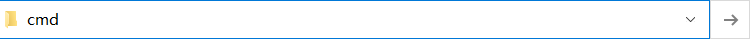
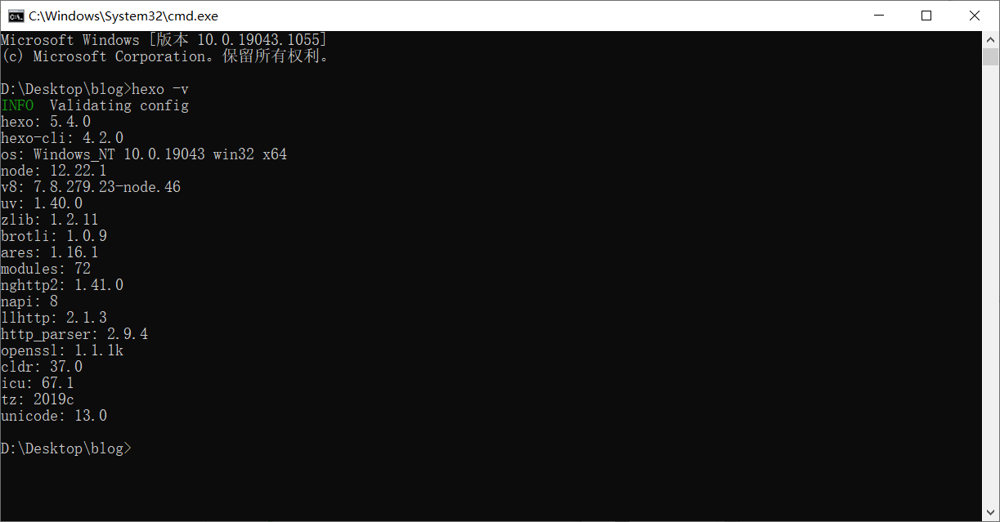
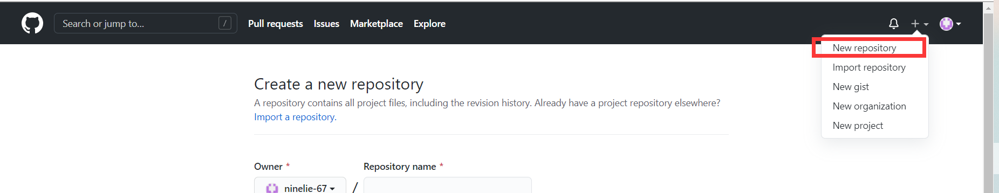
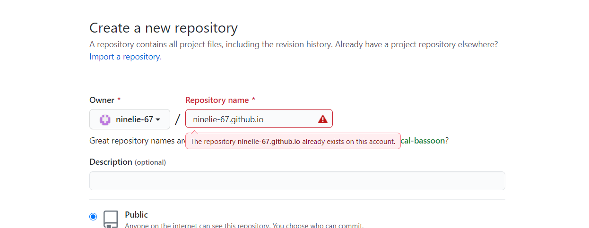
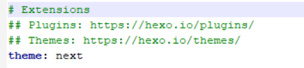
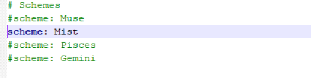

前言：用hexo主题next博客搭建过程中遇到了很多坑，经过差不多两三天的持续摸索优化，
个人博客算是初步完成了，在此分享搭建过程，算是避坑吧！！多说都是泪！！(p≧w≦q)
那就开始搭建吧！
准备工作
1，安装Node.js，Git
网上很多教程这里我就不详细展开了
2，安装hexo
我是用hexo来搭建个人博客所以盘它
1，创建一个文件夹（存放blog的东西，最好直接在桌面新建方便），
cd到该文件夹下,也可以直接在目录下输入cmd然后回车
2，设置npm淘宝镜像
npm默认的源的下载速度可能很慢，建议使用淘宝镜像替换。
1
npm install -g cnpm --registry=https://registry.npm.taobao.org
3，安装hexo
1
npm install -g hexo-cli
验证hexo安装是否成功
1
hexo -v

3，建站
==注意==：都在你博客根目录下执行
1 | hexo init |
4，hexo常用命令
创建新博文（博文位置为blog\source_posts下）:
1 | hexo new "New Post " |
根据当前目录下文件,生成静态网页（只有生成才能更新页面）:
1 | hexo generate |
清理生成文件（每次更新都要清理后重新生成）:
1 | hexo clean |
运行本地服务（可以在本地预览博客）:
- 打开浏览器，地址栏中输入：http://localhost:4000/,应该可以看见刚刚创建的博客了。
1 | hexo server |
上传至远端（部署到服务器上，后文会详细介绍）：
1 | hexo deploy |
部署个人博客
可以将个人博客部署到GitHub上，因为免费哈哈，也可以部署到码云或code上
这里以Github为例子
1，建立个人仓库


==注意：==用户部署个人博客的GitHub仓库的名称必须符合特定要求才行
规则：==用户+github.io==
然后点击创建即可。
2，安装部署插件
在博客目录下输入命令
1 | npm install --save hexo-deployer-git |
3，更改配置文件
在博客==根目录==下找到 _config.yml
修改以下内容:
1 | # Deployment## Docs: https://hexo.io/docs/one-command-deploymentdeploy: |
==注意：==type: ，repo:，branch: 后都有一个空格
4，部署
使用hexo命令hexo deploy ”
输入GitHub账号，密码，部署完成
在网页上访问http://+“你的GitHub用户名”+github.io即可访问自己个人博客
更改主题样式
hexo可更改多种主题，
可以去主题地址查看
这里以Next主题为例
1,下载主题
在博客根目录下输入命令
1 | git clone https://github.com/iissnan/hexo-theme-next.git themes/next |
2，启动主题
打开 站点配置文件（根目录下的_config.yml）， 找到 theme 字段，并将其值更改为 next

3，重新生成验证
执行hexo clean 和hexo generate
启动本地服务hexo server
在本地查看效果
4，部署更改的主题
执行命令hexo deploy
==注意：==要删除主题文件中的 ==.git==和**==.github==**不然更改的样式可能无法显示
Next主题样式
在这个环节遇到的问题最多，踩了好多好多的坑，哎( $ _ $） ！
1，Next提供4种风格（可以自己一一尝试）
- Muse-默认，这是 NexT 最初的版本，黑白主调，大量留白
- Mist - Muse 的紧凑版本，整洁有序的单栏外观
- Pisces - 双栏 Scheme
- Gemini-与Posces类似
在主题配置文件中（\blog\themes\next\ _congfig.yml）修改

将想要的风格前的#去掉
==注意==：只能同时使用一种风格
2，更多美化
可以在官方文档中一一查找。
还有百度查找自己喜欢的美化。
有时间更新一些常见美化步骤